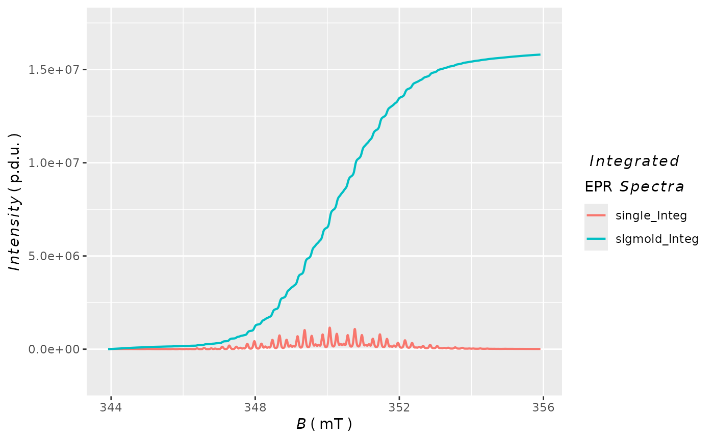

Plotting Integrated Forms of EPR Spectra Acquired by eval_integ_EPR_Spec
Source: R/plot_EPR_Specs_integ.R
plot_EPR_Specs_integ.RdVisualization (static plots based on ggplot2) of integrated EPR spectra
coming as data frame outputs from eval_integ_EPR_Spec.
Usage
plot_EPR_Specs_integ(
data.spectra.integ,
B = "B_G",
B.unit = "G",
Blim = NULL,
ylim = NULL,
slct.integs = c("single_Integ", "baseline_Integ_fit", "single_Integ_correct"),
line.width = 0.75,
line.type = 1,
axis.title.size = 15,
axis.text.size = 14,
legend.title.size = 13,
legend.text.size = 11,
separate.integs = FALSE,
separate.integ.scales = NULL,
output.df = FALSE
)Arguments
- data.spectra.integ
Data frame object, inherited output from the
eval_integ_EPR_Spec, ifoutput.vecs = FALSE(argument from the latter) corresponding to data frame including the original EPR spectral data and the integral(s).- B
Character string pointing to magnetic flux density
columnof the original (data.spectra.integ) data frame, either in "millitesla" or in "gauss", that isB = "B_G"(default) orB = "B_mT"orB = "Bsim_G"to include simulated EPR spectra as well.- B.unit
Character string denoting the magnetic flux density unit e.g.
B.unit = "G"(gauss, default) orB.unit = "mT"(millitesla).- Blim
Numeric vector, magnetic flux density in
mT/Gcorresponding to lower and upper limit of the selected \(B\)-region, such asBlim = c(3495.4,3595.4). Default:Blim = NULL(corresponding to the entire \(B\)-range of the integrated EPR spectrum).- ylim
Numeric vector corresponding to lower and upper limit of the \(y\)-axis scale (e.g.
ylim = c(-1e-4,1e-3)). This doesn't apply for separated integrals (ifseparate.integs = TRUE) and works only in overlay mode (in one graph/panel). Default:ylim = NULLcorresponding to the entire \(y\)-range of presented integrals.- slct.integs
Character string vector pointing to selected integrals/columns/variables (of the original
data.spectra.integdata frame) to be presented in the actual plot. Default:slct.integs = c("single_Integ","baseline_Integ_fit","single_Integ_correct").- line.width
Numeric, linewidth of the plot line in
mm, default:line.width = 0.75.- line.type
Character string or integer corresponding to width of the (spectral) line(s). Following types can be specified:
0 = "blank",1 = "solid"(default),2 = "dashed",3 = "dotted",4 = "dotdash",5 = "longdash"and6 = "twodash".- axis.title.size
Numeric, axis text title size in
pt. Default:axis.title.size = 15.- axis.text.size
Numeric, text size in
ptfor the axes unit values/descriptions, default:axis.text.size = 14.- legend.title.size
Numeric, legend text title size in
pt,default:legend.title.size = NULL, actually corresponding to 13/13pt.- legend.text.size
Numeric, legend text size in
pt, default:legend.text.size = NULL, actually corresponding to 11/11pt.- separate.integs
Logical, should be the integrals presented in overlay mode (in one graph/panel) or on separated panels (by
facet_wrap, see also the next argument) ? Default:separate.integs = FALSE(integrals are presented in overlay mode).- separate.integ.scales
Character string related to \(y\)-axes scales, unless the
separate.integs = FALSE, inherited fromfacet_wrap. Following expressions are available =>"fixed","free"or in one dimension"free_x"or"free_y". Default:separate.integ.scales = NULLin case ofseparate.integs = FALSE.- output.df
Logical, whether a transformed
data.spectra.integdata frame into tidy/long table format is required for additional processing or plotting. Default:output.df = TRUE.
Value
Depending on output.df argument, function returns plot object including all selected
integrated EPR spectra (output.df = FALSE,default) or list (output.df = TRUE)
consisting of
- df
Data frame object with intensities of all selected integrals and magnetic flux density \(B\) variables/columns in tidy/long table format.
- plot
Plot object showing all integrated EPR spectra corresponding to
df.
See also
Other Visualizations and Graphics:
draw_molecule_by_rcdk(),
plot_EPR_Specs(),
plot_EPR_Specs2D_interact(),
plot_EPR_Specs3D_interact(),
plot_EPR_present_interact(),
plot_labels_xyz(),
plot_layout2D_interact(),
plot_theme_In_ticks(),
plot_theme_NoY_ticks(),
plot_theme_Out_ticks(),
present_EPR_Sim_Spec()
Examples
## loading the package built-in example
TMPD.data.path <-
load_data_example(file = "TMPD_specelchem_accu_b.asc")
TMPD.data <-
readEPR_Exp_Specs(TMPD.data.path,
col.names = c("B_G","dIepr_over_dB"),
qValue = 3500,
norm.vec.add = c(20,0.001),
origin = "winepr")
## integration of the `TMPD` EPR spectrum
TMPD.data.integs <-
eval_integ_EPR_Spec(TMPD.data,sigmoid.integ = TRUE)
#
## plotting integrals in overlay mode
plot_EPR_Specs_integ(TMPD.data.integs,
slct.integs = c("single_Integ",
"sigmoid_Integ"),
B = "B_mT",
B.unit = "mT"
)

#
## separate integrals within the plot
plot_EPR_Specs_integ(TMPD.data.integs,
slct.integs = c("single_Integ",
"sigmoid_Integ"),
B = "B_mT",
B.unit = "mT",
separate.integs = TRUE,
separate.integ.scales = "free_y"
)